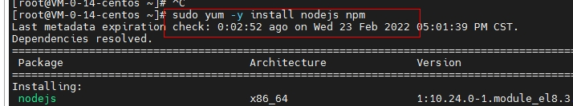
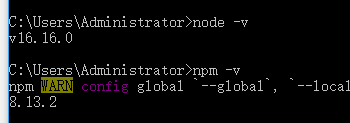
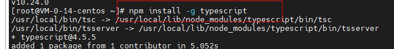
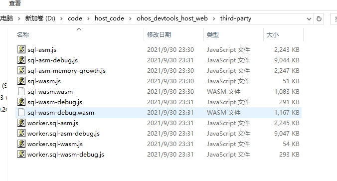
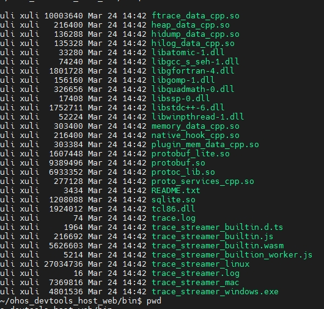
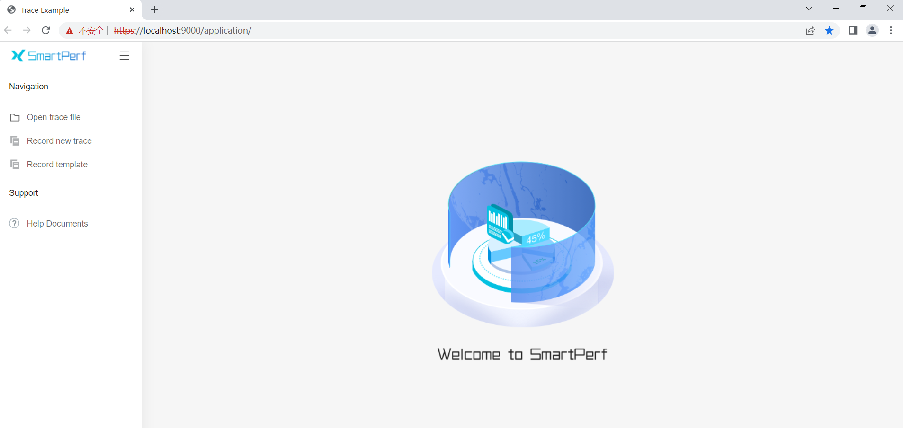

SmartPerf 编译部署指导文档
编译环境搭建
注意:在linux编译环境安装时以root或者其他 sudo 用户身份运行下面的命令。
node 环境安装
下载Node js安装包(windows推荐， linux跳过此步骤)
从网站下载node js安装包 https://nodejs.org/en/download/current/。
安装nodejs
- ubuntu 20.04 与Debian 11系统中，直接用apt-get安装，先切换到 root用户下，命令如下(node 版本 >= 16.15.1 npm 版本 >= 8.13.2)
sudo su
apt-get update
apt-get install nodejs npm

- centos 系统中使用yum安装，先切换到root用户下，命令如下：
sudo su
sudo yum -y install nodejs npm

-
windows系统中， 用安装包一路next即可
-
安装完成后运行检查是否安装成功
node -v
npm -v

出现版本号就代表安装成功了。
更换npm源
npm config set registry http://registry.npmmirror.com
安装tsc typeScript 编译器
直接使用npm 安装运行命令。
npm install -g typescript
tsc -v
验证安装完成:

go 编译环境安装
- ubuntu 环境下直接使用apt安装，以root用户执行(go 版本 >= 1.13.8 )
apt-get install golang-go

- centos系统中使用yum安装，先切换到root用户下，命令如下：
sudo su
sudo yum -y install go

-
windows 系统下 从 https://golang.google.cn/dl/ 下载安装包， 一路next 完成 安装即可
-
安装完成后 命令行运行验证是否安装成功
go version
项目编译
先下载sql.js的二进制包
从如下
https://github.com/sql-js/sql.js/releases/download/v1.6.2/sqljs-all.zip
获取到sql.js的二进制包。
将压缩包解压后， 将文件放置到项目third-party 目录下。

先编译获取trace_streamer 的二进制包
参照:smartperf/trace_streamer/compile_trace_streamer.md 编译出wasm、linux、Windows版本的二进制文件。
将获取到二进制文件放入到项目bin目录下，如果项目目录中无bin目录 先创建bin目录。
然后将trace_streamer的二进制文件放入bin目录中。


代码编译(依赖于上面node环境 和 go环境)
在项目目录安装项目依赖:
npm install
在项目目录下运行命令:
npm run compile

编译成功后会有main 可执行文件生成。
项目部署
linux版本部署需要给trace_stream程序赋予执行权限，cd dist/bin 目录下，执行如下命令：
chmod +x trace_streamer_*

直接运行 ./main 可执行程序，完成项目的部署。

访问项目
在浏览器上打开 https://[部署机器ip地址]:9000/application/
!!! 注意一定是https。

备注：如果未出现如图所示网页.而是显示 无法访问此网站。
可以在window cmd 里执行telnet [部署机器ip地址] 9000。
如果显示端口连接失败 可能是防火墙未对9000 端口放开即可。